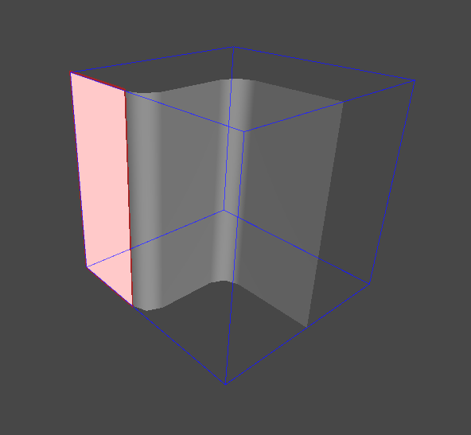
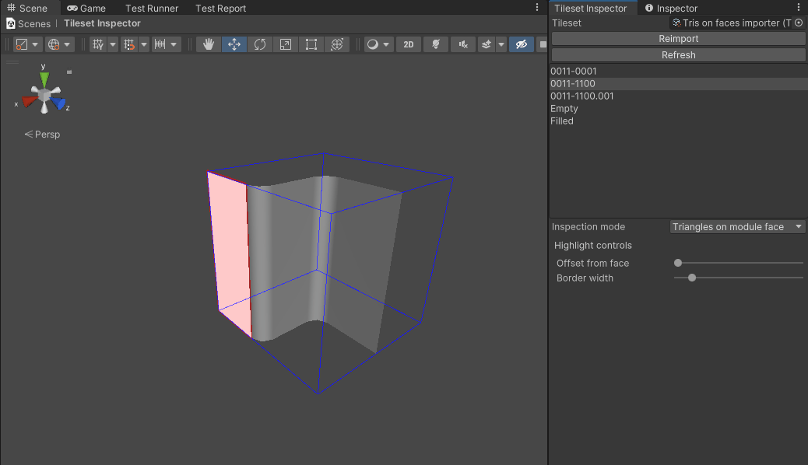

Triangles on Module Face
Triangles on module face are illegal within Wildtile. They are not automatically removed as this makes any problems obvious and you can solve the problems in the most appropriate way for your team.
Which Problems Are Identified?
Triangles on module faces cause Wildtile to misinterpret insideness and face connectivity. If modules are placed together, they will also cause extra physics collisions when sliding over them, and introduce a Z-fighting line at the seam.
How To Use This Inspector To Solve The Problem?
Set Inspection Mode to Triangles on Module Face. The scene view will highlight any triangles on the module's bounding box with a pink fill and a red border.

You can further highlight them using the Highlight Controls. Changing the offset from face will move highlights away from the module, so you can distinguish from the module's mesh. Changing the border width will change the width of the red border around the triangles on the face, making it easier to spot small triangles that are on the module's face.

Edit the module mesh in your modelling software, removing any highlighted faces.